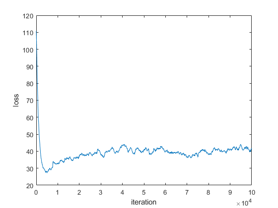

%%%%%%%%%%%%%%%%%%%%%%%%%%%%%%%% % WEI WANG @copyright % %%%%%%%%%%%%%%%%%%%%%%%%%%%%%%%% % a = W*h+U*x+b % h = tanh(a) % o = V*h+c % p = softmax(o) % W ---(m x m) % U ---(m x K) % v ---(k x m) % h ---(m x 1) % x ---(K x 1) % b ---(m x 1) % c ---(K x 1) clc; close all; clear; % read data [ind_to_char,char_to_ind,book_data] = Read_Data('data/Goblet.txt'); % check map Check_Map(ind_to_char,char_to_ind); % init [GDparam,RNN] = ParamInit(ind_to_char); % synthesize text n =10; x_0 = 'b'; h = zeros(GDparam.m,1); [generated_onehot,generated_txt] = txt_generator(n,h,GDparam,x_0,RNN, char_to_ind,ind_to_char); % calculate gradient %{ X_chars = book_data(1:GDparam.seq_length); Y_chars = book_data(2:GDparam.seq_length+1); X_trans = to_onehot(X_chars,char_to_ind); Y_trans = to_onehot(Y_chars,char_to_ind); h0 = zeros(GDparam.m,1); l1 = ComputeLoss(X_trans, Y_trans, RNN, h0); [a,h,o,p] = Evaluatesynth(X_trans,h0,RNN); grads = ComputeGradients(X_trans,Y_trans,RNN,a,h,p); num_grads = ComputeGradsNum(X_trans, Y_trans, RNN, 1e-4); f = fieldnames(grads)'; for i=1:numel(f) diff.(f{i}) = norm(grads.(f{i})-num_grads.(f{i}))/max([1e-6,norm(grads.(f{i}))+norm(num_grads.(f{i}))]); sprintf('the difference of gradient %s between two method is %f',(f{i}),diff.(f{i})) end %} % run sgd %{ [GDparam,RNN] = ParamInit(ind_to_char); GDparam.epochnum = 3; smooth_box = MiniBatchGD(RNN,GDparam); save('smooth_box.mat','smooth_box'); %} % plot loss % smooth_box = load('smooth_box.mat'); figure; size(smooth_box.smooth_box) plot(smooth_box.smooth_box) % hold on % legend('train cost','valid cost') xlabel('iteration') ylabel('loss') %}
ans =
'good !'
ans =
1 100000
